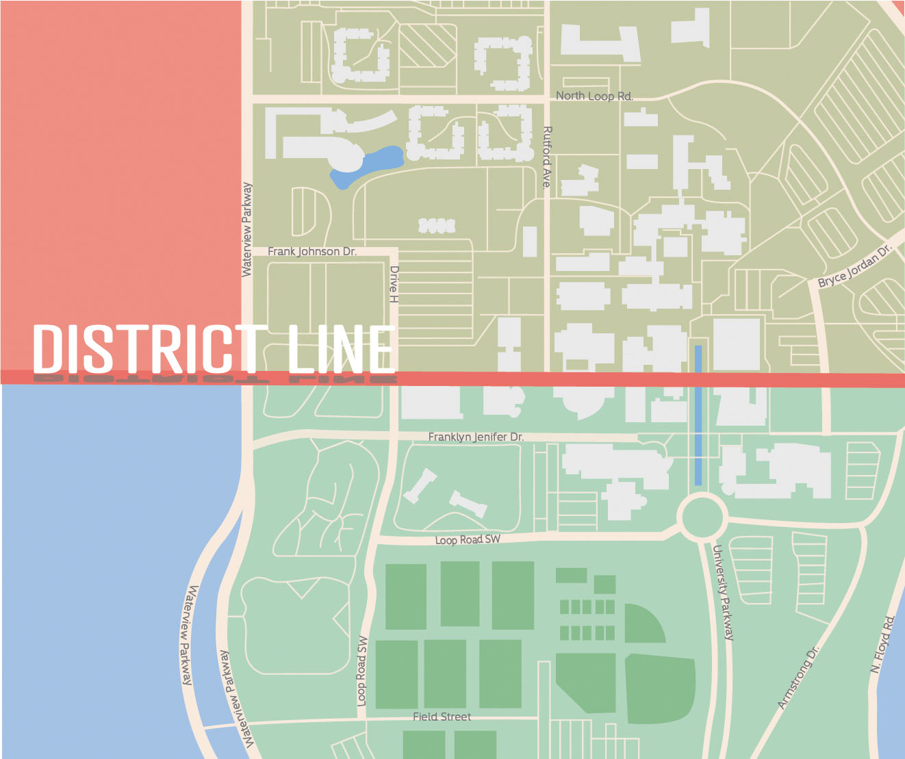

Am I eligible to vote?
In order to vote in Texas, you must be:
- At least 18 years old on election day AND at least 17 years and 10 months old on the day register to vote
- A United States Citizen and resident of the county in which you apply for registration
- Not convicted of a felony, unless you’ve finished a jail or prison sentence, including probation or parole
- Not declared mentally incapacitated by a court of law
If your permanent residence is in Texas, make sure you’re registered by the Oct. 5th deadline. To check your registration status, visit the
Texas Secretary of State website.
If your permanent residence is out of state, check with your state’s election officials for registration and ballot-by-mail information.
How do I register to vote?
The Voter Registration deadline in Texas is October 5th, so it’s important you make sure you’re registered. There are three main ways you can register:
- Contact or visit your local voter registrar to complete an application in person.
- The Dallas County Elections Office is found at 1520 Round Table Drive Dallas 75247.
- The Collin County Elections office is found at 2010 Redbud Blvd., Suite 102 McKinney 75069.
- Find your Local Voter Registrar Office here: County Voter Registrar Office
- Request a printed application at the Texas Secretary of State website, and the Secretary of State’s Office will mail it to the address provided. Once received, simply fill it out and return to your local county election office.
- Go to the Texas Secretary of State website, print and fill out the Voter Registration Application, and mail the form (stamp needed) to your local Voter Registrar’s Office.
Once a voter registration application is completed and signed, it must be returned to your local county election office at least 30 days before the election day.
How can I vote by mail in Texas?
To be eligible to vote by mail in Texas, you must either be 65 years or older, have a disability or an illness, be confined in jail, or out of the county in which you’re registered on Election Day and during the entire early voting period.
You’ll need to deliver a completed application for ballot by mail to your county elections office. They can be dropped off in person before the start of early voting on Oct. 13, or local election officials must receive mailed applications by Oct. 23.
You can print out an application, request one from the Secretary of State’s office, or contact your local elections office.
I have registered to vote in Dallas County. Where can I vote?
Early voting is open from Oct. 13-30th. The nearest early voting location to the UTD Campus is the Richardson Civic Center on Arapaho Road.
On Election Day (Nov. 3) you can cast your ballot at any of the voting centers in Dallas County, including an on-campus UT Dallas location at the UT Dallas Visitor Center.
I have registered to vote in Collin County. Where can I vote?
Early voting is open from Oct. 13-30th. The nearest early voting location to the UTD Campus is the Richardson Office Complex on Palisades Creek Drive.
On Election Day (Nov. 3) you can cast your ballot at any of the voting centers in Collin County, including an on-campus UT Dallas location at the UT Dallas Callier Center.
UTD County Division Reminder
When registering to vote, figuring out where to vote, and educating yourself about the candidates on your ballot, keep in mind that a county division line runs east horizontally from Waterview Parkway to Rutford Avenue, splitting the UTD Campus between Collin and Dallas County.
Due to this, Canyon Creek and University Village Phases 1–3 fall in Dallas County’s Precinct 2500. University Commons residence halls, Northside, and University Village Phases 6–9, however, should vote in Collin County’s Precinct 55. Even more divided are Phases 4 and 5, which rest on the county line.
Therefore, residents’ registration depends not only in which building but also in which apartment they reside.
Collin County Includes:
- Phase 4 (Except Buildings 33 & 39)
- Phase 5, 6, 7, 8, 9
- Building 38 North Apartments
- Residence Halls
- Northside
Dallas County Includes:
- Phase 1, 2, 3
- Phase 4 Buildings 33 & 39
- Building 38 South Apartments
- Canyon Creek

What should I prepare before I go to the polling station?
Bring one of the following Forms of Identification:
- Texas Driver’s License, issued by DPS
- Texas Election Identification Certificate, issued by DPS
- Texas Personal Identification Card, issued by DPS
- Texas Handgun License, issued by DPS
- United States Military Identification Card, with photo
- United States Citizenship Certificate, with photo
- United States Passport, book or card
All forms of identification must be current or expired no more than 4 years ago.
Who’s on the ballot?
Alongside the presidential race, there is a plethora of local and state elections you’ll be voting on, including Senators, State Representatives, local officials, and judges of varying levels of the judicial branch.
You can learn more about the specific candidates on your ballot at the
Texas Secretary of State Candidate Page.
To see all of the candidates on your ballot on election day, you can use the
Ballotpedia Sample Ballot Lookup. Ballotpedia is a nonpartisan, encyclopedic website that accumulates data related to candidates.
Federal Election Candidates
US President
- Donald Trump (Incumbent, Republican Party)
- Joe Biden (Democratic Party)
- Howie Hawkins (Green Party)
- Jo Jorgensen (Libertarian Party)
- Write-in nominees
US Senate - Texas
- John Cornyn (Incumbent, Republican Party)
- Mary Jennings Hegar (Democratic Party)
- David B Collins (Green Party)
- Kerry McKennon (Libertarian Party)